雑談コーディネータは、世界で初めて味のセンサーを開発・製造した池崎さん(52卒)。
池崎さんは、味の研究で工学博士を取得した「味博士」。
この日は、ウニもどき（プリンに醤油を垂らしたもの）や、メロンもどき（細切りキュウリの蜂蜜漬け）などを用意して、味覚についての雑談がありました。
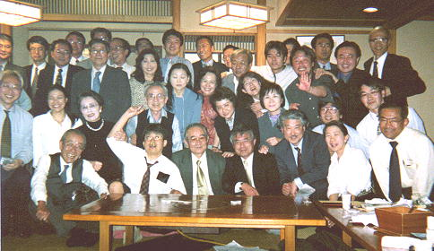
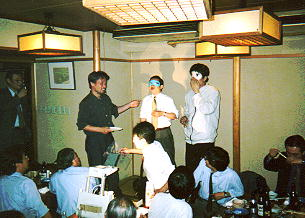
目隠しして味テスト
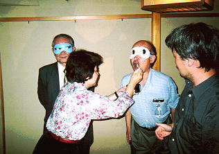
久保兄弟による味テスト
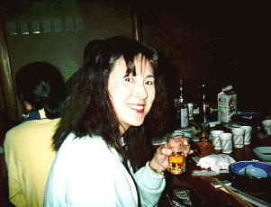
内藤さん(50卒)
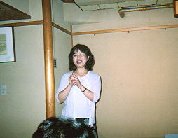
伊達さん(43卒)
この日はおいしいワインを持参。
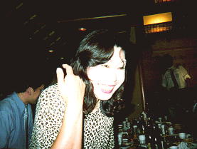
小島さん(43卒)
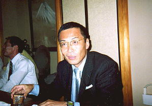
香川さん(43卒)
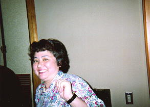
佐藤さん(51卒)
ベルギービールのオーソリティ
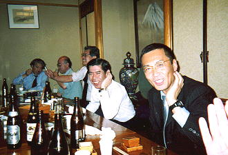
左、菱谷さん(42卒)右、香川さん(43卒)
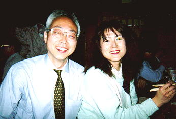
左、土居さん(47卒)右、内藤さん(50卒)
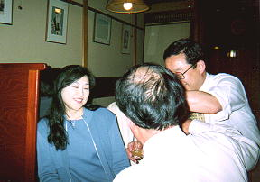
二見さん(53卒)
お父さんは、社会科の内田先生。
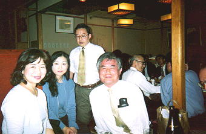
左から、伊達さん(43卒)
二見さん(53卒)、松野さん(53卒)
喜岡さん(37卒)
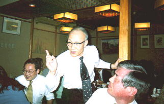
打越さん(38卒)
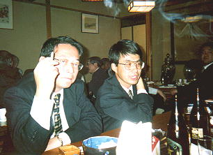
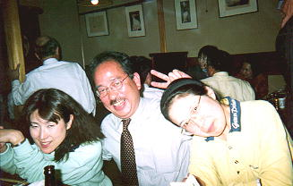
左から、内藤さん(50卒)
中山さん(50卒)、和田さん(50卒)
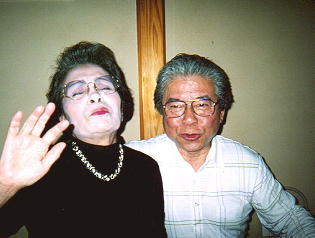
左、永野さん(27卒)右、林さん(27卒)
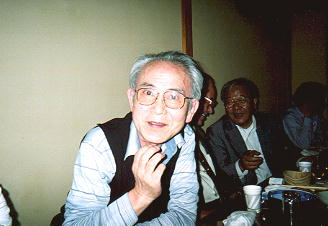
宮本さん(27卒)
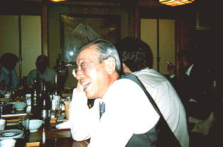
大西さん(33卒)
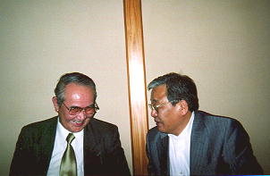
左、久保さん(27卒)右、松本さん(42卒)
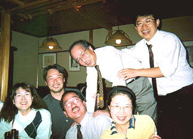
左から、内藤さん(50卒)
小山さん(53卒)、中山さん(50卒)
岡崎さん(37卒)、和田さん(50卒)
池崎さん(52卒)
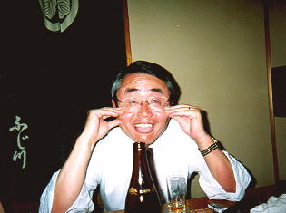
岩崎さん(49卒)
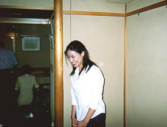
松前さん(H7卒)
玉翠会ホームページを見て参加。
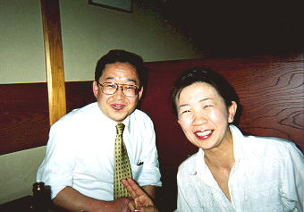
左、松野さん(53卒)右、野中さん(52卒)
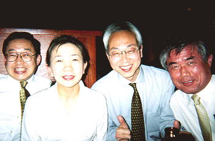
左から、松野さん(53卒)さん
野中さん(52卒)、土居さん(47卒)
喜岡さん(37卒)
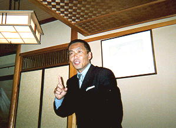
香川さん(43卒)
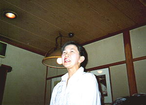
野中さん(52卒)
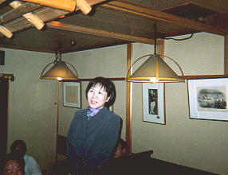
安川さん(52卒)
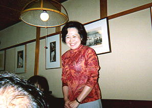
合地さん(52卒)
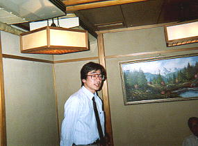
後藤さん(52卒)
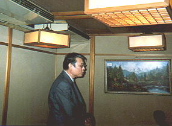
神崎さん(52卒)
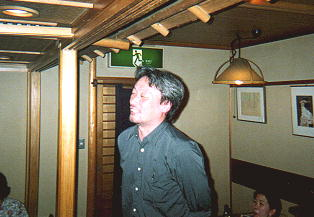
小山さん(53卒)
今日の司会役
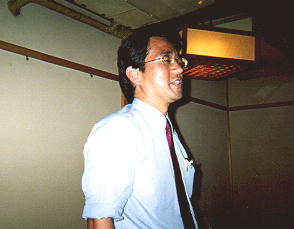
植松さん(52卒)
第19回総会の幹事代表
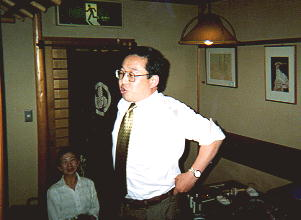
松野さん(53卒)
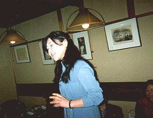
二見さん(53卒)
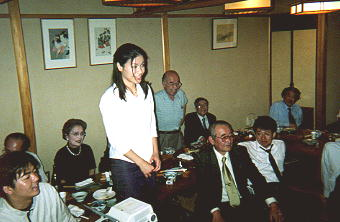
松前さん(H7卒)
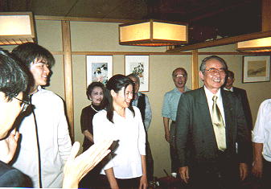
19回総会幹事代表植松さん(52卒) による一本締め
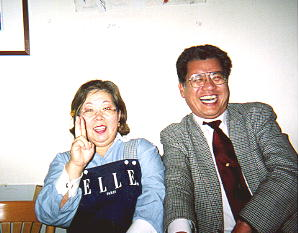
入江さん(42卒)
左の人は、２次会のうどん屋のママ。
話をしているうちに、長尾出身で、
入江さんの近所ということが判明。
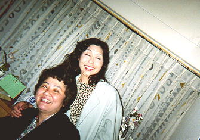
２次会風景
左から佐藤さん(51卒)小島さん(43卒)